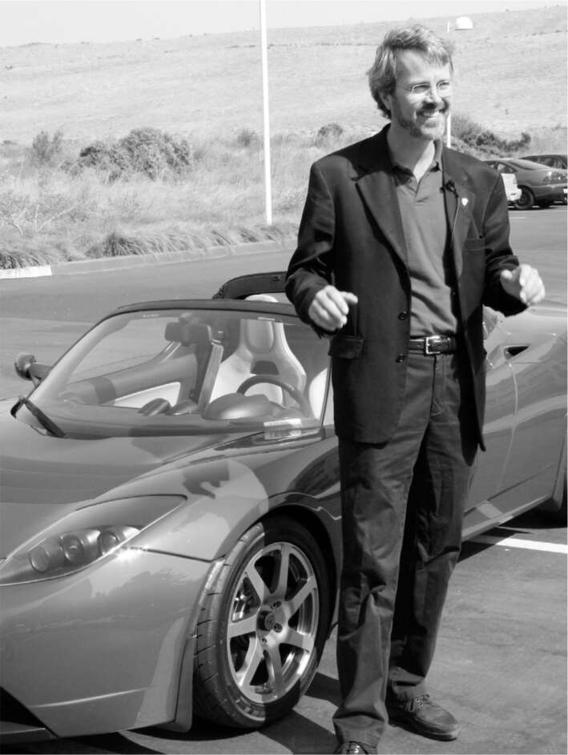

Sự ra đi của Eberhard
Ngay sau khi biết về chuyến đi bí mật của Musk đến Anh, Eberhard đã mời ông ăn tối ở Palo Alto. "Hãy bắt đầu tìm người thay thế tôi," anh nói. Sau này, Musk có những lời lẽ nặng nề về anh, nhưng tối hôm đó, ông tỏ ra ủng hộ. "Không ai có thể phủ nhận tầm quan trọng của những gì anh đã làm với tư cách là người sáng lập công ty này," ông nói. Tại cuộc họp hội đồng quản trị vào ngày hôm sau, Eberhard đã trình bày kế hoạch từ chức của mình và mọi người đều đồng ý.
Việc tìm kiếm người kế nhiệm diễn ra chậm chạp, chủ yếu vì Musk không hài lòng với bất kỳ ứng cử viên nào. "Tesla gặp quá nhiều vấn đề đến mức gần như không thể tìm được một CEO phù hợp," Musk nói. "Thật khó để tìm người mua một ngôi nhà đang cháy." Đến tháng 7 năm 2007, họ vẫn chưa tìm được ai. Đó là lúc Gracias và Watkins đưa ra báo cáo của họ, và tâm trạng của Musk thay đổi.
Musk triệu tập một cuộc họp hội đồng quản trị Tesla vào đầu tháng 8 năm 2007. "Anh ước tính chi phí của chiếc xe là bao nhiêu?" ông hỏi Eberhard. Khi Musk bắt đầu chất vấn như vậy, mọi chuyện thường không có kết thúc tốt đẹp. Eberhard gặp khó khăn trong việc đưa ra câu trả lời chính xác, và Musk tin rằng anh đang nói dối. Đó là một từ mà Musk thường xuyên sử dụng, đôi khi khá tùy tiện. "Anh ta đã nói dối tôi và nói rằng chi phí sẽ không thành vấn đề," Musk nói.
"Đó là lời vu khống," Eberhard đáp lại khi tôi trích dẫn lời buộc tội của Musk. "Tôi sẽ không nói dối bất kỳ ai. Tại sao tôi phải làm vậy? Chi phí thực sự cuối cùng cũng sẽ được tiết lộ." Giọng anh cao dần vì tức giận, nhưng ẩn chứa một nỗi đau buồn. Anh không hiểu tại sao sau mười lăm năm, Musk vẫn hăng hái bôi nhọ mình. "Đây là người giàu nhất thế giới đang tấn công một người không thể chống lại ông ta." Marc Tarpenning, đối tác ban đầu của anh, thừa nhận rằng họ đã tính toán sai giá cả, nhưng anh bảo vệ Eberhard trước cáo buộc nói dối của Musk. "Chắc chắn đó không phải là cố ý," anh nói. "Chúng tôi đã xử lý thông tin về giá cả mà chúng tôi có. Chúng tôi không nói dối."
Vài ngày sau cuộc họp hội đồng quản trị, Eberhard đang trên đường đến một hội nghị ở Los Angeles thì điện thoại reo. Đó là Musk, người thông báo với anh rằng anh bị cách chức CEO ngay lập tức. "Nó giống như bị một viên gạch đập vào đầu, điều mà tôi không bao giờ ngờ tới," Eberhard nói, dù lẽ ra anh nên lường trước được. Mặc dù anh đã đề xuất tìm kiếm một CEO mới, anh không ngờ mình sẽ bị sa thải một cách đột ngột trước khi tìm được người thay thế. "Họ đã họp mà không có tôi để bỏ phiếu loại tôi."
Anh cố gắng liên lạc với một số thành viên hội đồng quản trị, nhưng không ai nghe máy. "Hội đồng quản trị nhất trí rằng Martin phải ra đi, bao gồm cả những thành viên mà Martin đã đưa vào hội đồng quản trị," Musk nói. Tarpenning cũng sớm rời đi.
Eberhard lập một trang web nhỏ có tên Tesla Founders Blog, nơi ông trút giận về Musk và cáo buộc công ty "cố gắng loại bỏ và phá hủy bất kỳ phần hồn nào còn sót lại". Hội đồng quản trị yêu cầu ông tiết chế, nhưng không hiệu quả, và sau đó luật sư của Tesla đe dọa sẽ thu hồi quyền chọn cổ phiếu của ông, điều này đã có tác dụng. Có một số người chiếm giữ một góc tối trong tâm trí Musk. Họ kích động, khiến anh ta trở nên u ám và khơi dậy cơn giận dữ lạnh lùng. Cha anh là người đầu tiên. Nhưng kỳ lạ thay, Martin Eberhard, một cái tên hầu như không ai biết đến, lại là người thứ hai. "Dính líu đến Eberhard là sai lầm tồi tệ nhất tôi từng mắc phải trong sự nghiệp của mình", Musk nói.
Mùa hè năm 2008, khi các vấn đề sản xuất của Tesla ngày càng chồng chất, Musk đã tung ra một loạt các cuộc tấn công nhắm vào Eberhard, và Eberhard đã đáp trả bằng cách kiện ông tội phỉ báng. "Musk đã bắt đầu viết lại lịch sử", vụ kiện bắt đầu. Ông vẫn còn tức giận trước những lời buộc tội của Musk rằng ông đã nói dối. "Cái quái gì vậy?", ông nói. "Công ty mà Marc và tôi thành lập đã biến anh ta thành người giàu nhất thế giới. Chưa đủ hay sao?".
Cuối cùng, họ đạt được một thỏa thuận pháp lý không mấy dễ dàng vào năm 2009, trong đó họ đồng ý không nói xấu nhau và kể từ đó cả hai sẽ được coi là đồng sáng lập của Tesla, cùng với JB Straubel, Marc Tarpenning và Ian Wright. Ngoài ra, Eberhard đã nhận được một chiếc Roadster, như đã hứa. Sau đó, mỗi người đều đưa ra những tuyên bố tốt đẹp về người kia mà họ không tin.
Bất chấp điều khoản không nói xấu, Musk vẫn không thể ngăn mình bùng nổ trong cơn giận dữ vài tháng một lần. Năm 2019, ông đã tweet: "Tesla vẫn tồn tại bất chấp Eberhard, nhưng hắn ta liên tục tìm kiếm sự công nhận và những kẻ ngốc lại trao cho hắn". Năm sau, ông tuyên bố: "Hắn ta thực sự là người tồi tệ nhất mà tôi từng làm việc cùng". Sau đó, vào cuối năm 2021, "Câu chuyện thành lập Tesla do Eberhard miêu tả là hoàn toàn sai sự thật. Tôi ước gì mình chưa bao giờ gặp hắn".
Đến lúc này, Musk đáng lẽ ra phải nhận ra rằng mình không giỏi chia sẻ quyền lực với một CEO. Nhưng ông vẫn phản đối việc tự mình trở thành CEO của Tesla. Mười sáu năm sau, ông sẽ tự bổ nhiệm mình làm giám đốc của năm công ty lớn, nhưng vào năm 2007, ông nghĩ rằng mình nên giống như hầu hết các CEO khác và chỉ tập trung vào một công ty, trong trường hợp của ông là SpaceX. Vì vậy, ông đã chọn Michael Marks, một nhà đầu tư của Tesla, làm CEO tạm thời.
Marks từng là CEO của Flextronics, một công ty dịch vụ sản xuất thiết bị điện tử, mà ông đã biến thành một công ty dẫn đầu ngành có lợi nhuận cao bằng cách thúc đẩy một chiến lược mà Musk thích: tích hợp theo chiều dọc. Công ty của ông đã kiểm soát toàn bộ nhiều bước trong quy trình.
Musk và Marks ban đầu rất hòa hợp. Musk, người có thói quen kỳ lạ là người giàu nhất thế giới đi ngủ nhờ, sẽ ở lại nhà của Marks khi đến thăm Thung lũng Silicon. "Chúng tôi sẽ uống rượu vang và tán gẫu", Marks nói. Nhưng sau đó, Marks đã mắc sai lầm khi tin rằng mình có thể dẫn dắt công ty chứ không chỉ thực hiện theo mong muốn của Musk.
Mâu thuẫn đầu tiên xảy ra khi Marks kết luận rằng việc Musk quá mải mê với những lịch trình phi thực tế đồng nghĩa với việc các nguồn cung được đặt hàng và thanh toán, mặc dù không có khả năng chúng sẽ được sử dụng để chế tạo ô tô sớm. "Tại sao chúng ta lại mang tất cả những nguyên vật liệu này vào?", Marks hỏi trong một trong những cuộc họp đầu tiên của mình. Một quản lý trả lời: "Vì Elon cứ khăng khăng rằng chúng ta sẽ giao xe vào tháng Giêng". Dòng tiền cho những bộ phận này đang làm chảy máu ngân quỹ của Tesla, vì vậy Marks đã hủy hầu hết các đơn đặt hàng.
Marks cũng không đồng tình với cách cư xử khắc nghiệt của Musk. Vốn là người thân thiện, Marks nổi tiếng với thái độ lịch sự và tôn trọng đồng nghiệp, từ nhân viên vệ sinh đến lãnh đạo cấp cao. “Elon không phải là người dễ gần và không đối xử tốt với mọi người”, Marks, người từng rất sốc khi biết Musk thậm chí chưa đọc hết tiểu thuyết của vợ mình, Justine, chia sẻ. Vấn đề không chỉ nằm ở phép lịch sự thông thường, mà còn ảnh hưởng đến khả năng nắm bắt vấn đề của Musk. “Tôi đã nói với anh ấy rằng mọi người sẽ không nói thật với anh ấy, vì anh ấy khiến họ sợ”, Marks nói. “Anh ta có thể rất độc đoán và tàn nhẫn.”
Marks vẫn băn khoăn liệu tính cách cố hữu của Musk – điều mà ông gọi là hội chứng Asperger – có thể giải thích hoặc thậm chí biện minh cho một số hành vi của anh ta hay không. Liệu điều đó có ích lợi gì không, khi điều hành một công ty mà sứ mệnh quan trọng hơn cảm xúc cá nhân? “Anh ấy có phần tự kỷ, nên tôi nghĩ anh ấy thực sự không có sự kết nối nào với mọi người”, Marks nói.
Musk phản bác rằng việc quá dễ dãi có thể gây bất lợi cho một nhà lãnh đạo. Anh ta nói với Marks rằng, việc muốn làm bạn với tất cả mọi người khiến bạn quá quan tâm đến cảm xúc của từng cá nhân thay vì quan tâm đến thành công của cả doanh nghiệp – một cách tiếp cận có thể gây tổn hại cho nhiều người hơn. “Michael Marks sẽ không sa thải bất kỳ ai”, Musk nói. “Tôi đã nói với anh ấy, Michael, anh không thể nói với mọi người rằng họ phải cải thiện, rồi khi họ không làm được thì chẳng có gì xảy ra với họ cả.”
Sự khác biệt về chiến lược cũng xuất hiện. Marks quyết định Tesla nên hợp tác với một nhà sản xuất ô tô giàu kinh nghiệm để lắp ráp Roadster. Điều này hoàn toàn trái ngược với bản năng của Musk. Anh ta khao khát xây dựng những Gigafactory, nơi nguyên liệu thô sẽ được đưa vào một đầu và ô tô sẽ ra ở đầu kia.
Trong các cuộc tranh luận về đề xuất thuê ngoài việc lắp ráp Tesla của Marks, Musk ngày càng tức giận, và anh ta không hề kiềm chế phản ứng của mình. “Đó là điều ngu ngốc nhất tôi từng nghe”, anh ta đã nói trong một vài cuộc họp. Đó là câu nói mà Steve Jobs thường dùng. Bill Gates và Jeff Bezos cũng vậy. Sự thẳng thắn tàn nhẫn của họ có thể gây khó chịu, thậm chí xúc phạm. Nó có thể hạn chế thay vì khuyến khích đối thoại thẳng thắn. Nhưng đôi khi, nó cũng hiệu quả trong việc tạo ra thứ mà Jobs gọi là đội ngũ nhân viên xuất sắc, những người không muốn làm việc với những kẻ thiếu quyết đoán.
Marks quá tài giỏi và tự trọng để chịu đựng cách cư xử của Musk. “Anh ta đối xử với tôi như một đứa trẻ, và tôi không phải là trẻ con”, ông nói. “Tôi lớn tuổi hơn anh ta. Tôi cũng đã điều hành một công ty trị giá hai mươi lăm tỷ đô la.” Ông sớm rời đi.
Marks thừa nhận rằng Musk đã đúng về lợi ích của việc kiểm soát mọi khía cạnh của quy trình sản xuất. Ông cũng trăn trở với câu hỏi cốt lõi về Musk: liệu hành vi tồi tệ của anh ta có thể tách rời khỏi động lực quyết liệt đã làm nên thành công của anh ta hay không. “Tôi xếp anh ta vào cùng hạng với Steve Jobs, đó là một số người chỉ là những kẻ tồi, nhưng họ đạt được rất nhiều thành tựu đến nỗi tôi chỉ có thể ngồi lại và nói, ‘Hình như đó là một bộ.’” Tôi hỏi, điều đó có biện minh cho hành vi của Musk không? “Có lẽ nếu cái giá mà thế giới phải trả cho những thành tựu này là một kẻ tồi thực sự, thì đó có lẽ là cái giá đáng trả. Đó là cách tôi nghĩ về nó.” Sau một lúc im lặng, ông nói thêm, “Nhưng tôi không muốn trở thành người như vậy.”
Khi Marks rời đi, Musk đã tuyển một CEO mà ông cảm thấy sẽ cứng rắn hơn: Ze’ev Drori, một sĩ quan lính dù Israel dày dạn kinh nghiệm chiến đấu, người đã trở thành một doanh nhân thành đạt trong ngành kinh doanh bán dẫn. “Người duy nhất thực sự đồng ý làm CEO của Tesla là người không sợ hãi bất cứ điều gì, bởi vì có rất nhiều điều đáng sợ,” Musk nói. Nhưng Drori không biết gì về sản xuất ô tô. Sau vài tháng, một nhóm giám đốc điều hành cấp cao do JB Straubel dẫn đầu nói rằng họ sẽ gặp khó khăn nếu tiếp tục làm việc cho ông, và Ira Ehrenpreis, một thành viên hội đồng quản trị, đã giúp thuyết phục Musk tự mình tiếp quản. “Tôi phải nắm chắc tay lái,” Musk nói với Drori. “Không thể có hai người cùng lái một lúc.” Drori đã nhã nhặn rút lui, và Musk chính thức trở thành CEO của Tesla (và là người thứ tư giữ chức danh này trong khoảng một năm) vào tháng 10 năm 2008.

Martin Eberhard và chiếc Roadster